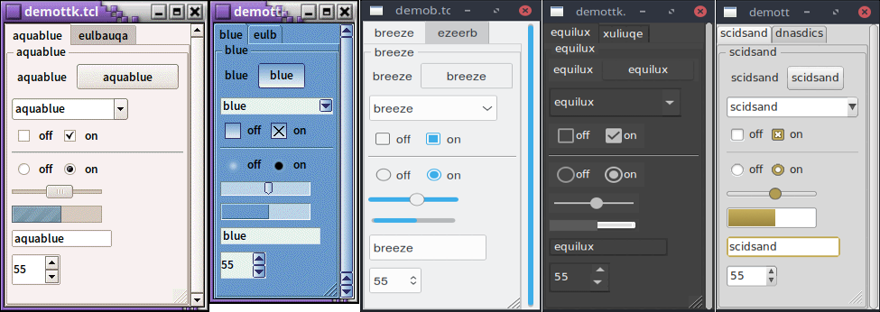

Styles and Themes
The themed aspect of the modern Tk widgets is one of the most powerful and exciting aspects of the newer widget set. Yet, it's also one of the most confusing.
This chapter explains styles (which control how widgets like buttons look) and themes (which are a collection of styles that define how all the widgets in your application look). Changing themes can give your application an entirely different look.

Applying different themes.
Note that it's not just colors that have changed, but the actual shape of individual widgets. Styles and themes are extremely flexible.
Why?
However, before you get carried away, very few applications will benefit from switching themes like this. Some games or educational programs might be exceptions. Using the standard Tk theme for a given platform will display widgets the way that people expect to see them, particularly if they're running macOS and Windows.
On Linux systems, there's far less standardization of look and feel. Users expect (and are more comfortable with) some
variability and "coolness." Because different widget sets (typically GTK and QT) are used by window managers, control panels, and other system
utilities, Tk can't seamlessly blend in with the current settings on any particular system. Most of the Linux screenshots in this
tutorial use Tk's alt theme. Despite users being accustomed to variability, there are limits to what most users will accept.
The styling of core widgets in Tk's classic widget set, matching circa-1992 OSF/Motif, is a prime example.
Styles and themes, used in a more targeted manner and with significant restraint, can have a role to play in modern applications. This chapter explains why and when you might want to use them and how to go about doing so. We'll begin by drawing a parallel between Tk's styles and themes and another realm of software development.
Understanding Styles and Themes
If you're familiar with web development, you know about cascading stylesheets (CSS). There are two ways it can be used to customize
the appearance of an element in your HTML page. In the first way, you add a bunch of style attributes (fonts, colors, borders, etc.) directly
to an element in your HTML code via the style attribute. For example:
<label style="color:red; font-size:14pt; font-weight:bold; background-color:yellow;">Meltdown imminent!</label>
The other way to use CSS is to attach a class to each widget via the class attribute.
The details of how elements of that class appear are provided elsewhere, often in a separate CSS file.
You can attach the same class to many elements, and they will all have the same appearance. You don't need to repeat
the full details for every element. More importantly, you separate the logical content of your site (HTML) from its
appearance (CSS).
<label class="danger">Meltdown imminent!</label>
...
<style type="text/css">
label.danger {color:red; font-size:14pt; font-weight:bold; background-color:yellow;}
</style>
Back to Tk.
- In the classic Tk widgets, all appearance customizations require specifying each detail on individual widgets,
akin to always using the
styleHTML attribute. - In the themed Tk widgets, all appearance customizations are made via attaching a style to a widget, akin to using
the
classHTML attribute. Separately, you define how widgets with that style will appear, akin to writing CSS. - Unlike with HTML, you can't freely mix and match. You can't customize some themed entries or buttons with styles, and others by directly changing appearance options.
Yes, there are a few exceptions, like labels where you can customize the font and colors through both styles and configuration options.
Benefits
So why use styles and themes in Tk? They take the fine-grained details of appearance decisions away from individual instances of widgets.
That makes for cleaner code and less repetition. If you have 20 entry widgets in your application, you don't need to repeat the same appearance details every time you create one (or write a wrapper function). You just assign them a style.
Styles also put all appearance decisions in one place. And because styles for a button and styles for a widget can share common elements, it promotes consistency and improves reuse.
Styles also have many benefits for widget authors. Widgets can delegate most appearance decisions to styles. A widget author no longer has to hardcode logic to the effect of "when the state is disabled, consult the 'disabledforeground' configuration option and use that for the foreground color." Not only did that make coding widgets longer (and more repetitive), but it also restricted how a widget could be changed based on its state. If the widget author hadn't coded in logic to change the font when the state changed, you as an application developer using the widget were out of luck.
Using styles, widget authors don't need to provide code for every possible appearance option. That not only simplifies the widget but paradoxically ensures that a wider range of appearances can be set, including those the widget author may not have anticipated.
Using Existing Themes
Before delving into the weightier matters of tastefully and selectively modifying and applying styles to improve the usability of your application and cleanliness of your code, let's deal with the fun bits: using existing themes to completely reskin your application.
Themes are identified by a name. You can obtain the names of all available themes:
>>> s = ttk.Style()
>>> s.theme_names()
('aqua', 'step', 'clam', 'alt', 'default', 'classic')
Tkinter encapsulates all style manipulations in the ttk.Style class. We'll therefore need an instance of that
class for this and other operations.

Built-in themes.
Besides the built-in themes (alt, default, clam, and classic), macOS includes a theme named
aqua to match the system-wide style, while Windows includes themes named vista, winxpnative, and
winnative.
Only one theme can ever be active at a time. To obtain the name of the theme currently in use, use the following:
>>> s.theme_use() 'aqua'
This API, which was originally targeted for Tk 8.6, was back-ported to Tk 8.5.9. If you're using an earlier version of Tk getting this info is a bit trickier.
Switching to a new theme can be done with:
s.theme_use('themename')What does this actually do? Obviously, it sets the current theme to the indicated theme. Doing this, therefore, replaces all the currently available styles with the set of styles defined by the theme. Finally, it refreshes all widgets, so that they take on the appearance described by the new theme.
Using Styles
We'll now tackle the more difficult issue of how to take full advantage of styles and themes within your application, not just reskinning it with an existing theme.
Definitions
We first need to introduce a few essential concepts.
Widget Class
A widget class identifies the type of a particular widget, whether
it is a button, a label, a canvas, etc. All themed widgets have a default class. Buttons have the class TButton,
labels TLabel, etc.
Widget State
A widget state allows a single widget to have more than one appearance or behavior, depending on things like mouse position, different state options set by the application, and so on.
As you'll recall, all themed widgets maintain a set of binary state flags, accessed by the state and instate methods.
The flags are: active, disabled, focus, pressed,
selected, background, readonly, alternate, and invalid.
All widgets have the same set of state flags, though they may ignore some of them (e.g., a label widget would
likely ignore an invalid state flag). See the themed widget page
in the reference manual for the exact meaning of each state flag.
Style
A style describes the appearance (or appearances) of a widget class. All themed widgets having the same widget class will have the same appearance(s).
Styles are referred to by the name of the widget class they describe. For example,
the style TButton defines the appearance of all widgets with the class TButton.
Styles know about different states, and one style can define different appearances based on a widget's state.
For example, a style can specify how a widget's appearance should change if the pressed state flag is set.
Theme
A theme is a collection of styles. While each style is widget-specific (one for buttons, one for entries, etc.), a theme collects many styles together. All styles in the same theme will be designed to visually "fit" together with each other. (Tk doesn't technically restrict bad design or judgment, unfortunately!)
Using a particular theme in an application really means that, by default, the appearance of each widget will be controlled by the style within that theme responsible for that widget class.
Style Names
Every style has a name. If you're going to modify a style, create a new one, or use a style for a widget, you need to know its name.
How do you know what the names of the styles are? If you have a particular widget, and you want to know
what style it is currently using, you can first check the value of its style configuration option. If
that is empty, it means the widget is using the default style for the widget. You can retrieve
that via the widget's class. For example:
>>> b = ttk.Button() >>> b['style'] '' >>> b.winfo_class() 'TButton'
In this case, the style that is being used is TButton. The default styles for other themed widgets
are named similarly, e.g., TEntry, TLabel, etc.
It's always wise to check the specifics. For example, the treeview widget's class is Treeview, not TTreeview.
Beyond the default styles, though, styles can be named pretty much anything. You might create your own style
(or use a theme that has a style) named FunButton, NuclearReactorButton, or even GuessWhatIAm (not a
smart choice).
More often, you'll find names like Fun.TButton or NuclearReactor.TButton, which suggest
variations of a base style; as you'll see, this is something Tk supports for creating and modifying styles.
The ability to retrieve a list of all currently available styles is currently not supported.
This will likely appear in Tk 8.7 in the form of a new command, ttk::style theme styles
to return the list of styles implemented by a theme. It also proposes adding a style method
for all widgets, so you don't have to examine both the widget's style configuration option and
its class. See TIP #584.
Applying a Style
To use a style means to apply that style to an individual widget. If you know the name of the style you want to use, and which widget to apply it to, it's easy. Setting the style can be done at creation time:
b = ttk.Button(parent, text='Hello', style='Fun.TButton')
As well, a widget's style can be changed at any time with the style configuration option:
b['style'] = 'Emergency.TButton'
Creating a Simple Style
So how do we create a new style like Emergency.TButton?
In situations like this, you're creating a new style similar to an existing one but varies in a certain aspect. This is the most common reason for creating new styles.
For example, you want most of the buttons in your application to keep their normal appearance, but have
certain "emergency" buttons highlighted differently. Creating a new style (e.g., Emergency.TButton),
derived from the base style (TButton), is the appropriate thing to do.
Prepending another name (Emergency) followed by a dot onto an existing style creates a new style
derived from the existing one. The new style will have exactly the same options as the existing one except for the indicated differences:
s.configure('Emergency.TButton', font='helvetica 24', foreground='red', padding=10)You could then apply that style to an individual button widget using its style configuration option,
as shown earlier. Every other button widget would retain its normal appearance.
How do you know what options are available to change for a given style? That requires diving a little deeper inside styles.
Manipulating Styles
In this section, we'll see how to change the style's appearance by modifying style options. You can do this either by modifying an existing style, or more typically, by creating a new style. We saw how to create a simple style that was derived from another one earlier:
s.configure('Emergency.TButton', font='helvetica 24', foreground='red', padding=10)Modifying a Style Option
Modifying an option for an existing style is done in a similar fashion as modifying any other configuration option, by specifying the style, name of the option, and new value:
s.configure('TButton', font='helvetica 24')You'll learn more about what the valid options are shortly.
If you modify an existing style, like we've done here with TButton, that modification will apply to all widgets using
that style (so by default, all buttons). That may well be what you want to do.
To retrieve the current value of an option, use the lookup method:
>>> s.lookup('TButton', 'font')
'helvetica 24'State Specific Style Options
Besides the normal configuration options for the style, the widget author may have specified different options to use when the widget is in a particular widget state. For example, when a button is disabled, it may change the button's label to grey.
Remember that the state is composed of one or more state flags (or their negation), as set by the widget's state method,
or queried via the instate method.
You can specify state-specific variations for one or more of a style's configuration options with a map. For each configuration option, you can specify a list of widget states, along with the value that option should be assigned when the widget is in that state.
The following example provides for the following variations from a button's normal appearance:
- when the widget is in the disabled state, the background color should be set to
#d9d9d9 - when the widget is in the active state (mouse over it), the background color should be set to
#ececec - when the widget is in the disabled state, the foreground color should be set to
#a3a3a3(this is in addition to the background color change we already noted) - when the widget is in the state where the button is pressed, and the widget is not disabled, the relief should be set to
sunken
s.map('TButton',
background=[('disabled','#d9d9d9'), ('active','#ececec')],
foreground=[('disabled','#a3a3a3')],
relief=[('pressed', '!disabled', 'sunken')])Because widget states can contain multiple flags, more than one state may match an option
(e.g., pressed and pressed !disabled will both match if the widget's pressed state flag is set). The list
of states is evaluated in the order you provide in the map command. The first state in the list that matches is used.